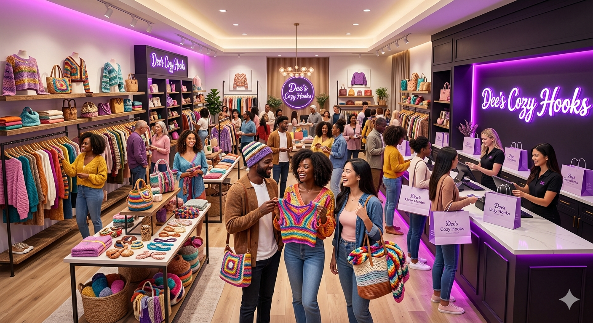

Our Story
The Origin
"At Dee's Cozy Hooks, every creation begins with a single thread and a vision for something extraordinary. What started as a deep appreciation for the rhythm of the hook and yarn has evolved into a boutique dedicated to the art of modern crochet. We believe that in a world of mass production, there is an irreplaceable magic in something made by hand. Our journey is fueled by the desire to keep this timeless craft alive, blending traditional techniques with a sharp, contemporary '4K' aesthetic."
The Quality
"We don't just 'make' items; we engineer comfort. Quality at Dee's Cozy Hooks means more than just a finished product—it means sourcing the finest, softest yarns that feel like a second skin. Every stitch is meticulously placed to ensure durability and a 'lovely' professional finish. Whether it’s the intricate tension of a custom-fit top or the plush density of a cozy blanket, our work is defined by precision and a commitment to luxury you can feel."
The Promise

Your wardrobe should be as unique as your story. That’s why customization is the heartbeat of our business. We collaborate with you to bring your dream designs to life, using our signature 'Sweet Purple' flair to make every piece stand out. From vibrant statement wear to delicate home accents, our promise is to provide you with a handcrafted masterpiece that radiates warmth, style, and the cozy soul of authentic crochet."